A concise chronological guide to the principal planning, construction, generation, commissioning and operational noise-compliance milestones identified in the available documentary record.
This page provides a high-level documentary sequence. It does not replace the detailed chronology, technical-report pages or governing-framework analysis.
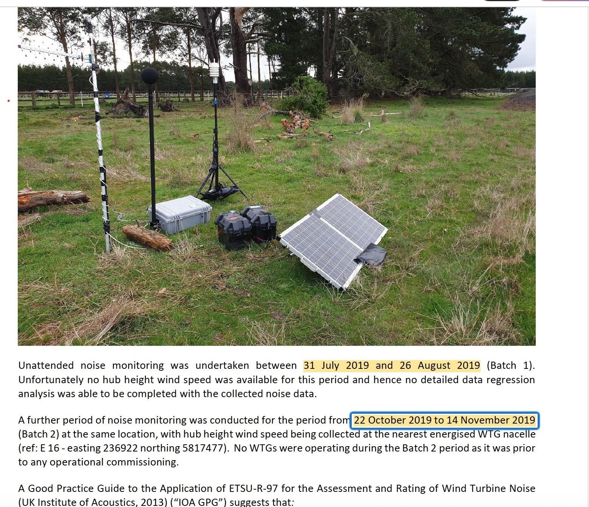
2007
Initial background noise monitoring
Background sound monitoring was undertaken during the original pre-construction assessment period. This material formed part of the technical record preceding the 2008 noise assessment.
Documentary source: Marshall Day Acoustics background monitoring record.
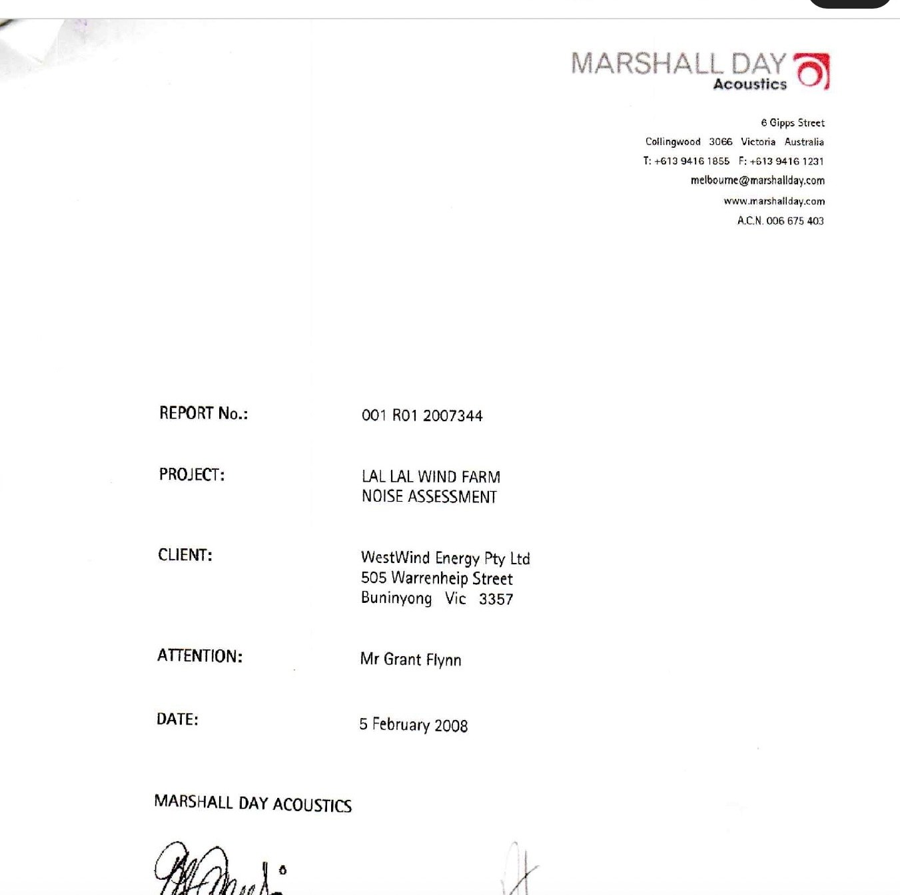
5 February 2008
Marshall Day Noise Assessment
Marshall Day Acoustics issued its Lal Lal Wind Farm Noise Assessment for WestWind Energy Pty Ltd. The report is an early technical assessment within the project’s planning record.
Documentary source: Marshall Day Acoustics, Report 001 R01 2007344, 5 February 2008.
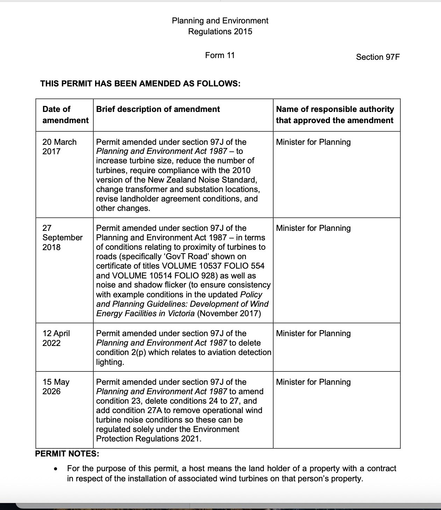
30 April 2009
Planning Permit issued
The planning permit established the project approval and the conditions governing development, operation and later noise-compliance assessment.
Documentary source: Planning Permit PL-SP/05/0461, issued 30 April 2009.
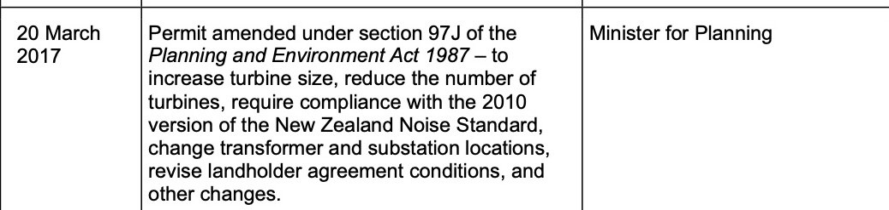
20 March 2017
Planning Permit amended
The permit was amended before construction. The amendment forms part of the governing planning framework applicable to the project.
Documentary source: Planning permit amendment dated 20 March 2017.
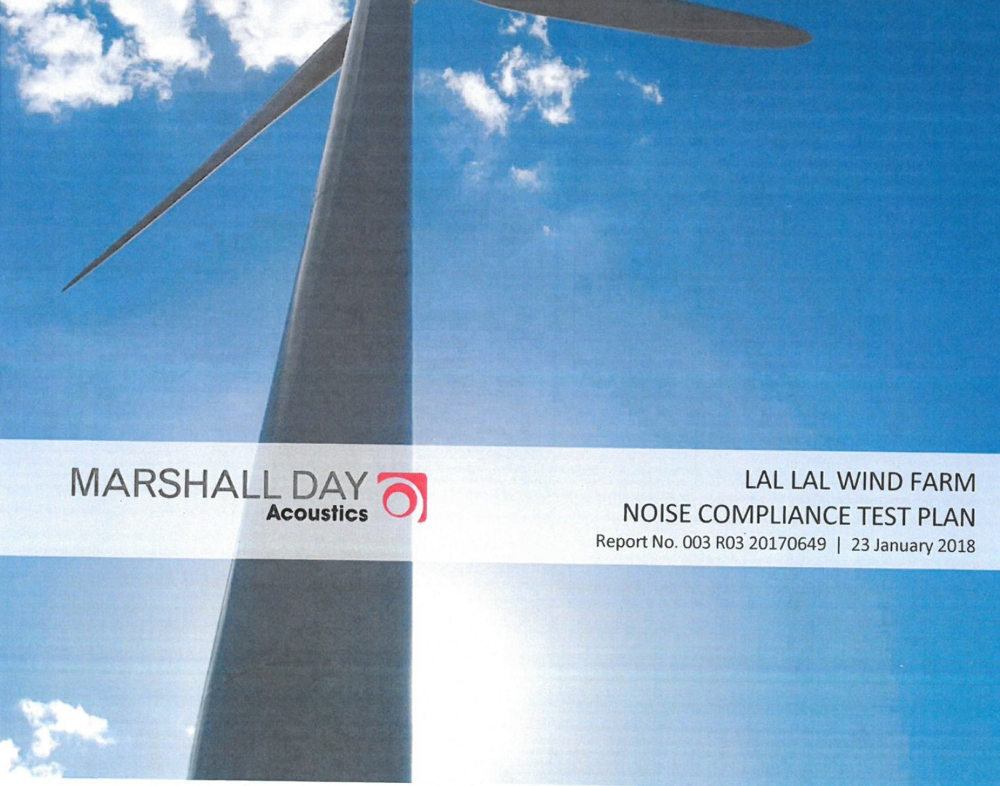
23 January 2018
Noise Compliance Testing Plan
Marshall Day Acoustics issued the endorsed Noise Compliance Testing Plan. It records the operational measurement and reporting pathway and identifies K15aa for updated background monitoring before operation.
Documentary source: Marshall Day Acoustics, MDA 003 R03, 23 January 2018.
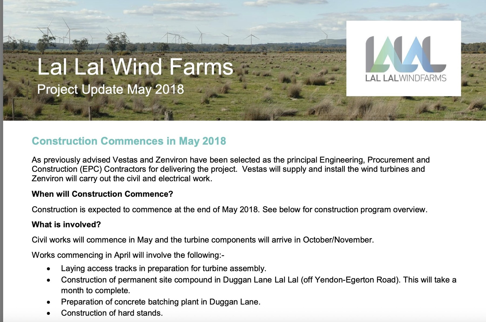
May 2018
Construction commenced
The project bulletin advised that construction would commence at the end of May 2018, with civil works, access roads, the site compound and substation works forming part of the initial program.
Documentary source: Lal Lal Wind Farms Project Update, May 2018.
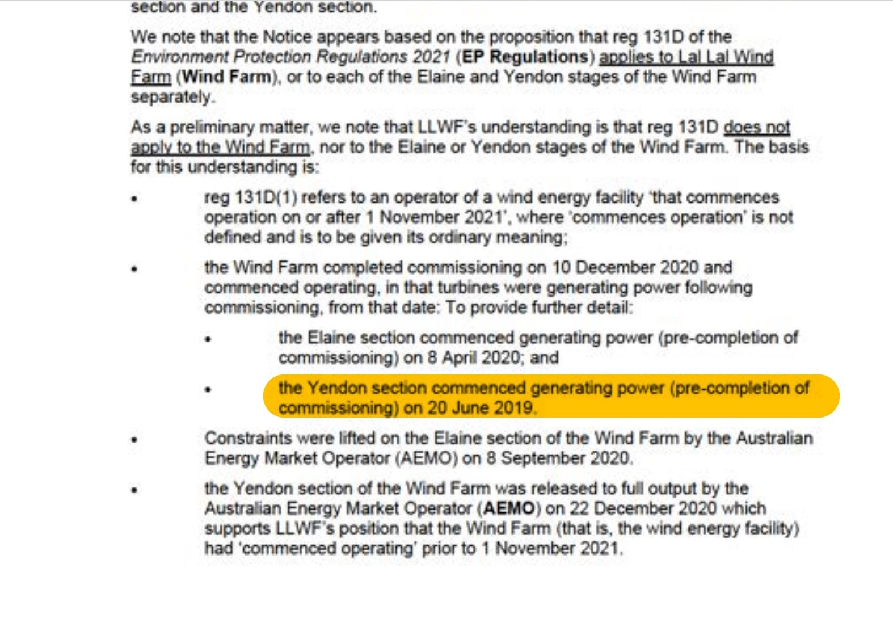
20 June 2019
Generation commenced
Lal Lal Wind Farm commenced generating power before completion of commissioning. The 15 April 2025 LLWF letter records that the Yendon section commenced generating power on 20 June 2019.
Documentary source: LLWF letter dated 15 April 2025.
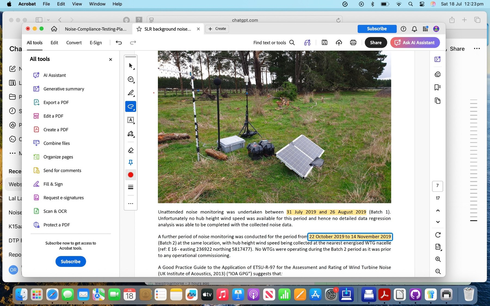
July–November 2019
Supplementary K15aa background monitoring
Supplementary monitoring later reported by SLR was undertaken during this period. Its timing is read alongside the construction, energisation, generation and commissioning chronology.
The Community Reference Group record states that construction was complete while commissioning continued, documenting the transition between construction and operation.
Documentary source: Community Reference Group minutes, 1 October 2019.
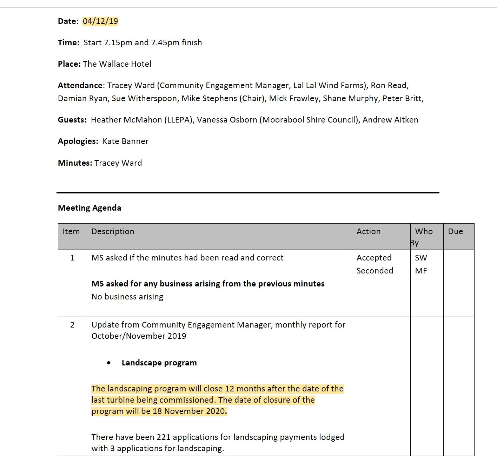
18 November 2019
Final turbine commissioned
The December 2019 Community Reference Group record identifies 18 November 2019 as the date used for the final turbine commissioning milestone and the associated landscaping-program closure date.
Documentary source: Community Reference Group minutes, 4 December 2019.
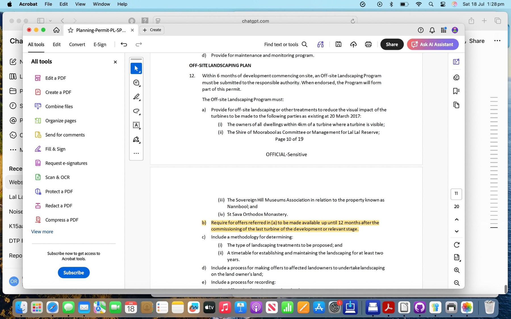
2021–2024
Operational noise monitoring and reporting
Operational monitoring was undertaken through Stage 1 and Stage 2 assessment programs. These reports are read against Planning Permit Condition 12, the endorsed NCTP and the applicable post-construction assessment and reporting pathway.
A further permit amendment was issued on 12 April 2022. The amendment is retained separately within the permit chronology and documentary hierarchy.
Documentary source: Planning permit amendment dated 12 April 2022.
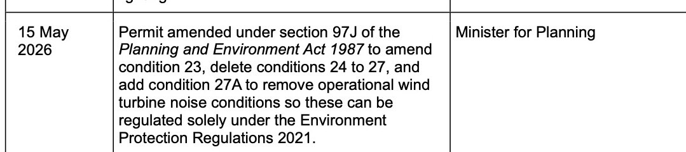
15 May 2026
Planning Permit amended
The permit was amended again on 15 May 2026, including changes associated with the later regulatory framework and responsible-authority arrangements.
Documentary source: Planning permit amendment dated 15 May 2026.
Reading position: Dates are attributed to the identified documentary sources. Where the wider record contains differing commissioning or operational descriptions, those distinctions remain preserved in the detailed chronology and verification pages.